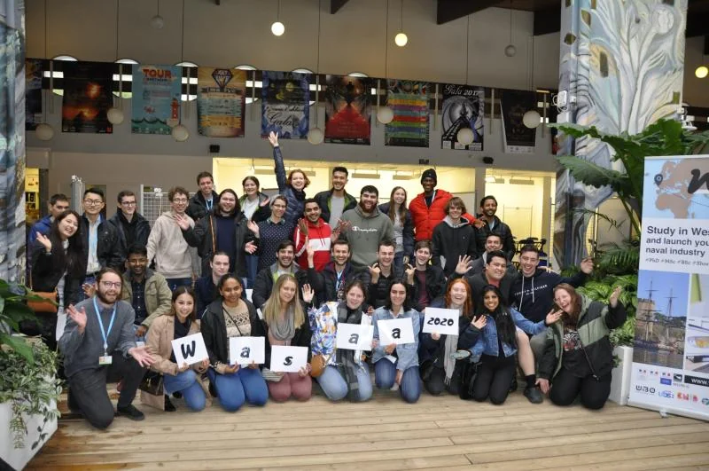
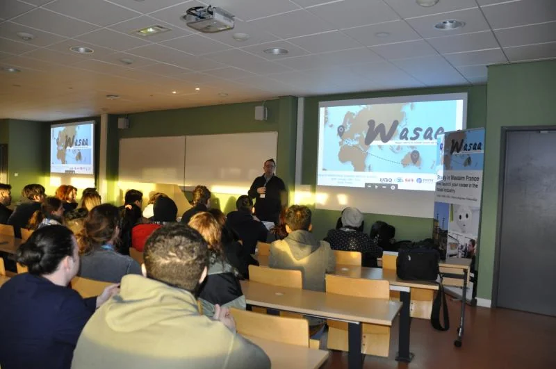
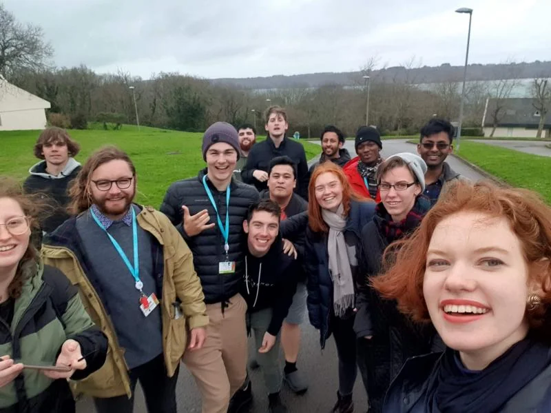
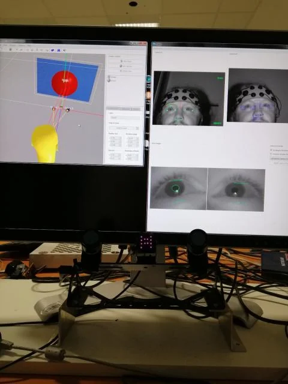

A little more about me
About me
I’m Steve, a researcher and engineer based in Brisbane. I work at QUT and co-founded Panalogy Lab, an independent applied AI research and development company.
Engineering, economics
and a few turns along the way
My background brings together electrical engineering, economics and hands-on project delivery. Before my current research and applied AI work, I worked on industrial automation, control systems, functional safety and multidisciplinary engineering projects.
During my PhD in Economics, I studied how people and complex systems respond to change. My current work often brings the two backgrounds together: studying behaviour while building the software needed to investigate it.
Professional experience
Experience and current roles
Postdoctoral Research Fellow · QUT
Applied AI, behavioural economics and computational research with the ARC Training Centre for Behavioural Insights for Technology Adoption. Executive Committee member and co-founder / coordinator of the ARC BITA Geek Seminar Series.
Co-Founder & CEO · Panalogy Lab
Independent applied AI R&D, spanning research and product strategy, hands-on prototyping, requirements, evaluation, industry engagement and delivery.
Engineering & project delivery · AEP Elical
Electrical Engineer and Project Manager, with concurrent HSEQ leadership (2019–2022) and Nyrstar client relationship management (2021–2023). Industrial automation, control systems, functional safety and multidisciplinary delivery.
Research Assistant · QUT
Research in the School of Economics and Finance, alongside engineering and economics study and professional practice.
Program Leader · AFL Queensland
Program leadership, sports coaching and supervision in the Brisbane and Ipswich area · January 2015–November 2018.
I also contribute as a Fellow Investigator with QUT’s Energy Transition Centre and an Associate Investigator with QUT’s Centre for Data Science.
Academic foundations
Education
PhD in Economics
Queensland University of Technology
Bridging Complexity and Behavioural Economics: The Constrained Methods Matrix. Read the thesis ↗Bachelor of Engineering (Electrical)
Queensland University of Technology · Honours Class 2A
Honours project: gesture recognition for human–machine interaction.Bachelor of Business (Economics)
Queensland University of Technology · Distinction
Experiences that shaped my work
Learning across borders
Vietnam · Research and higher education exchange
From 3–24 October 2024, I visited co-authors and prospective collaborators in Ho Chi Minh City and Hanoi, including the Institute of Smart City and Management at the University of Economics Ho Chi Minh City, RMIT’s Hanoi and Saigon South campuses, and SEAMEO RETRAC, where I facilitated invited conference panels.
I also met international education and collaboration organisations, including representatives of RMIT Melbourne, the British Columbia Council for International Education, the Canadian Bureau for International Education, and Colleges and Institutes Canada. An industry site visit to EoH explored its work on Internet of Things platforms, hardware integration and cloud services. Panel titles and speaking engagements →
France · WASAA 2020 at IMT Atlantique
I was one of 24 Australian students selected for the program in Brest, France, in January–February 2020. The three-week program combined technology, language and cultural learning.
In the Human Factors strand, I explored human–machine relationships through bioinformatics, crisis management, leadership modelling and cognitive decision-making. I also contributed to a PhD study in flight operator cognitive state modelling, working with an aviation multitask environment and presenting the findings.








China · Huawei and the Australian Technology Network
One of 29 Australian students selected for a 2018 program in Shenzhen combining language and cultural study with training in 5G, the Internet of Things, communications and networking.
The Netherlands · Delft University of Technology
During a 2017–2018 exchange, I completed engineering coursework and a research project investigating how environmental design and perceived effort could encourage cycling.
Selected achievements
Selected awards
- 2023/2024: BEST / ACHLR Early Career Researchers Award.
- 2022: Caleb Lo HDR Award, co-awarded with Elcin Tuzel at the Fourth Annual BEST Conference on Human Behaviour and Decision Making.
- 2019: Economic Society of Australia Queensland Academic Prize.
- 2019: Institute of Engineering and Technology Present Around the World, Queensland winner.
- 2018: second place with my team at the Australian Nudgeathon.
- 2017: Nudgeathon People’s Choice Award.
- 2015–2019: multiple Dean’s List recognitions across QUT Engineering and Business.
Contributing to the community
Service and contribution
I serve on the ARC BITA Executive Committee and co-founded its Geek Seminar Series and public research resources hub. I represented early-career researchers from QUT’s Faculty of Business and Law on the University Research Committee in 2023–2024.
My community work includes Nudgeathon coaching, research mentoring, school outreach and the Mansfield State High School Digital Solutions Mentorship Program. Earlier roles included student engineering society leadership and membership of Brisbane Central Lions Club.
Peer review 14 journals and research platforms
I have reviewed for the following journals and research platforms:
- Applied Economics
- BMC Public Health
- Futures
- Heliyon
- International Journal of Health Policy and Management
- Journal of Computational Social Science
- Journal of Economic Surveys
- Kyklos
- Nature Communications
- Oxford Economic Papers
- Psychology & Marketing
- Qeios
- Review of Managerial Science
- Scientific Reports
Board and advisory opportunities
I’m open to board and advisory roles with private companies, not-for-profit organisations and research or community bodies, particularly where my experience in AI, technology adoption, engineering and research can contribute. Get in touch about a board or advisory role →
Get in touch
Contact
I welcome conversations about research collaborations, teaching, supervision, speaking engagements and practical applications of AI.
Research & academic enquiries
Collaborations, teaching, supervision and research training.
s.bickley@qut.edu.auPanalogy Lab enquiries
Independent commercial applied AI research, development and advisory work.
steve@panalogy-lab.com